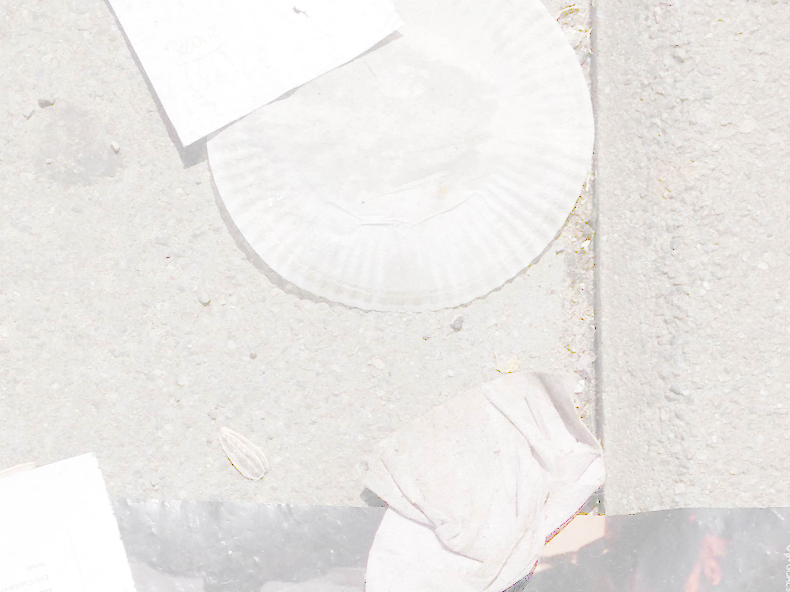

Swap
Saman Kamyab
21.10. - 07.11.2021
Opening on Thursday October 21st, 18-22
Open 13-16, October 23rd, 6th & by appointment
He is in the living room on the old leather couch. His sweaty bare skin is glued to the brown leather. The wool blanket is itchy and too warm. Around him where there is light, there is dust. He breathes heavily,trying to get rid of something. His trousers are on the coffee-table, the belt buckle touches the table’s heavy glass, making a sharp noise. He hopes he didn’t wake his grandmother up. She would ask him about everything, what he is doing, what is going on, if he is ready. His fingers smell like ketchup, his nails are a little dirty. His hair is too long. He puts on his trousers and goes out from the living room, walking carefully, staying on the humid carpet, avoiding the squeaky wood-flooring. Outside things are better. It’s the outside, nothing can ever be that wrong while you are outside, he thinks. He searches for his cigarettes. He puts onhis shoes and walks away. He is walking in the morning sun. It’s the middle of July, severe heat-waves determine the work rhythms of the farmed lands. Air-conditioned tourists arrive from the north, or from thewest. Bright days merge endlessly one into the other, ATMs take minutes to give back the debit cards, dogs bark in a distance, once every half hour. The night before he had entered his grandmother's room and takenall her money.
He passes the tennis field where a woman and her husband are playing. They are elegant but already tired from the heat. She looks at her husband and her husband turns around and sees him. They wait for him to be out of sight and start playing again. He stops and looks at them from behind a tree. She is tall, in her 50s. Her husband is also tall. She wears a white skirt and a yellow shirt, the husband wears a pale green polo shirt. Around him, behind the tennis fields, high grass and dry bushes hide faded magazine pages and empty packs of cigarettes. He continues to walk and finds the main road. He arrives at the bus stop. He enters the first bus and sits on one of the back seats.
The bus stops. It’s the end of the line. He gets out and walks towards the nearest bit of shadow. There is something bright far away, it flickers. He starts walking toward the light. It’s a CD hanging on a window. It’sa bar. He enters. There’s a fan on the counter. He gets close to it and asks for a Coca Cola Zero. A girl looks at him and tells him the price. He pays and she gives him the Coca Cola Zero, with a straw. He sits, he wantsto use the straw but it keeps floating up. He drinks and looks at his phone. He is not the only customer. There is a man. The man is reading a book. The girl looks at him, drinking the Coca Cola Zero. He smiles, shesmiles back. The cigarette in the ashtray keeps burning. “It’s so dry, they keep burning”, he says. “You need to…” He spits on the smoky cigarette-butt. The man leaves the bar and forgets his book. He goes to theman’s table and takes the book. She looks at him but doesn’t say anything. He crunches the last ice cube in his mouth, finishes the Coca Cola Zero and leaves. She says goodbye. He says goodbye. He lights another cigarette and checks his phone. His neck is bent 90 degrees, his eyes are not visible. He finds a bench, underneath a billboard, sits down and starts reading the man’s book. He falls asleep and dreams of his grandmother, the way she writes things down in her notebook. In the dream his grandmother is trying to tell a joke, but she keeps laughing and laughing. The joke is about a dog running a marathon. He wakes up, the bench is now in the sun. He goes back to the bar and orders a glass of water and asks for some crisps.
-Stefano Faoro
